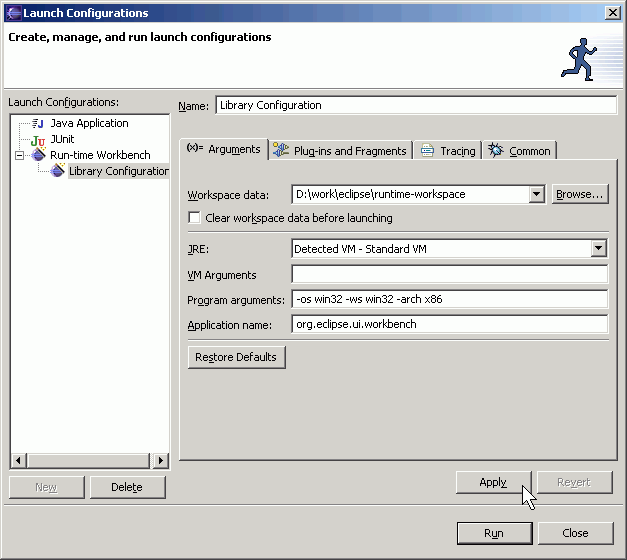
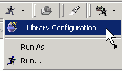
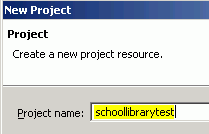
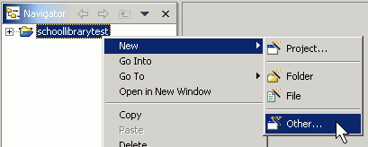
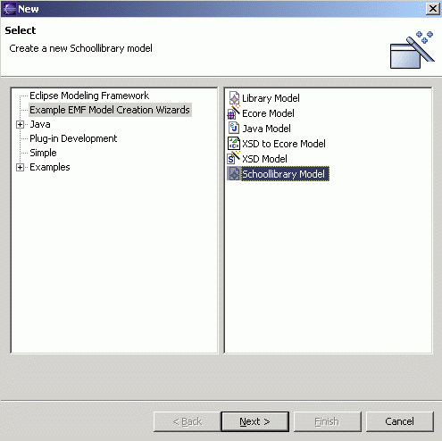
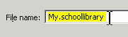
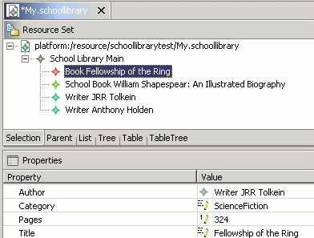

Generating an Extended EMF Model
Top
Previous: Generating the EMF Model and the Editor
Next: Modifying the Editor
Step 3: Running the Generated Editor
Before a run-time workbench instance can be run, a launch configuration need to be setup.
-
Switch to the Debug perspective and configure a launch configuration
as described in Step 4 of the previous tutorial if it has not already been
set up.

- Launch a run-time workbench instance, either from the configuration dialog or the Run menu:

-
Wait for the run-time workbench instance to come up. Bring
up the "Help/About Eclipse Platform" dialog, click on the "Plug-in
Details" button, and verify that the generated plugins are loaded.

The school library model wizard can now be used to create a new instance of
the model.
-
Bring up the "File/New/Project..." dialog and select "Simple" followed by
"Project". Give the project a name and click the "Finish" button.

-
Right-click the project and select "New/Other..." from the pop-up menu.

-
Select "Example EMF Model Creation Wizards" and "Schoollibrary Model". Click
the "Next" button.

-
Enter a file name for the "schoollibrary" model. Make sure it ends with a
".schoollibrary" extension.
Click the "Next" button.

-
Select "SchoolLibrary" as the root model object and click the "Finish" button.

-
The "My.schoollibrary" resource should open up in the main
window. Note that the root object is indeed a "School Library". Enter some
values for the "Location" and "Name" attributes in the Properties view. Refer
to the previous tutorial or the manual on how to open the Properties view
if it is not already opened.

- Right-click on the School
Library and select "New Child". Notice that three kinds of objects
can be created under a School Library: "Writer", "Book", and "School Book". "Writer" and "Book" are defined in the
"library" package while "SchoolBook" is defined in the "schoollibrary" package.

- Create
a couple "Writer" objects, a "Book" object and a "School Book" object. Notice
that a "School Book" object inherits all the attributes of a "Book" object
plus one extra attribute ("value") as we intended.


- Save the model.

Top
Previous: Generating the EMF Editor and the Editor
Next: Modifying the Editor